- Introduction
- HTML5
- plotly Graphics
- plotly Charts
- plotly Maps
- Dash
- Callbacks
- Publishing

Introduction
This module will introduce you to Dash, a framework that integrates
Python, plotly, and Flask to
construct web-based dashboard in Python. We will work through a number
of simple examples of loading data, visualizing it with Python's built-in
graphics operations, then integrating those visualizations into an
interactive Dash web dashboard, which can be viewed online by anyone
with a web browser.
In order to fully understand how to use Dash, you need to also
understand
basic HTML5, plotly, and Python. HTML5 is used to define
the layout of the elements in your dashboard. plotly is used to
construct graphical components (visualizations) within your dashboard.
Finally, Python ties everything together to control used interaction
and changes on the dashboard based on the user's interaction
choices.
Setup
In order to use the Dash examples in this tutorial, you will need
to add the dash Python package. To do this, run the
Anaconda Prompt as an administrator, and at the command line enter the
following.
(base) C:> conda install -c conda-forge dash
HTML5
HTML (Hypertext Markup Language) is used to create
the layout (sections, paragraphs, headings, links, and so on) for web
pages and web applications. In 1989, Tim Berners-Lee developed the
concept for HTML while working in the computer services section of
CERN, the European Laboratory for Particle Physics in
Geneva. Berners-Lee suggested that, rather than downloading research
documents as files from individual computers, you could
instead link to the text of the files themselves. This would
form a cross-reference system between research documents. From one
research paper, you could display the content of another paper that
held relevant text or diagrams. The cross-reference system could be
seen as a web of information held across computers throughout
the world.
Berners-Lee's idea was followed by Hypercard, a filing-card
type application for the Apple Macintosh built by Bill Atkinson. The
main limitation of this system was that hypertext jumps could
only be made on files held on the same computer. In the mid 90s, the
Internet developed the Domain Name System (DNS) that mapped
easy-to-remember names like www.ncsu.edu to their
corresponding IP addresses, a unique locator for a given
domain. Berners-Lee built on this to develop the HyperText Transfer
Protocol (HTTP) and the HyperText Markup Language (HTML), defining a
method to transmit HTML documents between computers using HTTP.
Up to this point, HTML was mostly a research-centered idea. In
1992, the National Center for Supercomputer Applications (NCSA) at the
University of Illinois-Urbana Champaign (UIUC) developed the first web
browser, Mosaic. Mosaic was released on Sun Microsystems
workstations in 1993. This was followed by Netscape in 1994, built by
Marc Andreessen and Jim Clark. Next came Internet Explorer in 1995,
Google Chrome in 1998, and the Mozilla foundation (the precursor to
Firefox) in 2003.
It is beyond the scope of our module to discuss all aspects of
HTML, and for Dash, it is not required, since all we're concerned
about is how different HTML tags affect the layout of
information. To this end, we list below some of the common HTML tags
important to Dash and their corresponding
purpose. A complete list of
tags is available online.
- •
div - A section of a document
- •
H1, H2, H3, H4, H5, H6 - Headers
in decreasing priority
- •
p - A paragraph
- •
span - A block of text, usually with
properties different from the surrounding text
- •
br - A line break
- •
ol - An ordered list
- •
ul - An unordered list
- •
li - A list item in an ordered or
unordered list
- •
input - An input component, where
the type of input is defined by the
input's
type attribute: input box,
checkboxes, radiobuttons, and so on.
- •
table - A table
- •
tbody - Definition of where a
table's body starts and stops
- •
tr - A single table row
- •
td - A single table column value
(embedded within a table row defined
with
<tr>)
- •
thead - Definition of where a
table's header starts and stops
- •
th - A single table column value
in the table's header (embedded within a table row defined
with
<tr>)
- •
tfoot - Definition of where a
table's footer starts and stops
- •
tf - A single table column value
in the table's footer (embedded within a table row defined
with
<tr>)
Here is a very simple web page demonstrating some of these tags in
use.
<html>
<body>
<div>
<p>This is a paragraph</p>
<p>This is a paragraph <span style='font-size: 1.25em'>with a larger font</span> inside it.</p>
<ol>
<li>This is the first item of a list ordered 1,2,...</li>
<li>This is the second item</li>
</ol>
<ul>
<li>This is a bullet list (unordered)</li>
</ul>
<table style='border-collapse: collapse;'>
<tr>
<th style='border: 1px solid black;'>Header Column One</th>
<th style='border: 1px solid black;'>Header Column Two</th>
</tr>
<tr>
<td style='border: 1px solid black;'>Normal Table Cell One</td>
<td style='border: 1px solid black;'>Normal Table Cell Two</td>
</tr>
</table>
</div>
</body>
</html>
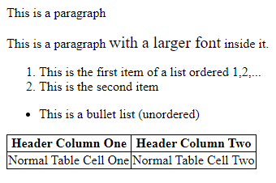
The result of executing the HTML code in a web browser
plotly
plotly is a Python library designed to provide a wide
range of standard charts. plotly is built on the Plotly JavaScript
library, and is meant to support creation of interactive web-based
visualizations. As an example, here is a plotly program that can be
run in a Jupyter notebook.
>>> import plotly.graph_objects as go
>>>
>>> fig = go.Figure( data=go.Bar( y=[2,3,1] ) )
>>> fig.show()
This produces the following simple bar chart.
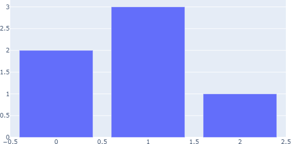
A plotly bar chart
Charts
Although plotly can be used directly to create charts, it is
generally recommended to start with Plotly Express, which sits
on top of plotly and allows entire figures to be created in a more
efficient fashion. Plotly Express functions use plotly graph objects
internally and return a plotly.graph_object.figure
instance. plotly's documentation shows examples of how to build a
graph in Plotly Express, followed by code to build the equivalent
graph in plotly. Since Plotly Express returns a basic plotly figure
instance, modifications of the Plotly Express charts can be done in
way that is identical to how plotly's charts are changed. We will use
Plotly Express code whenever it is possible.
To provide you with examples of how to build the basic charts and
graphs you will want to use in your dashboards, we provide a
collection of code and resulting graphs that Plotly Express
supports.
Bar Graph
Plotly Express supports bar charts, stacked bar charts, and
side-by-side bar charts.
>>> import plotly.express as px
>>> import pandas as pd
>>>
>>> df = px.data.medals_long()
>>>
>>> canada = df[ df[ 'nation' ] == 'Canada' ]
>>> fig = px.bar( canada, x='medal', y='count' )
>>> fig.show()
>>>
>>> fig = px.bar( df, x='nation', y='count', color='medal' )
>>> fig.show()
>>>
>>> fig = px.bar( df, x='nation', y='count', color='medal', barmode='group' )
>>> fig.show()
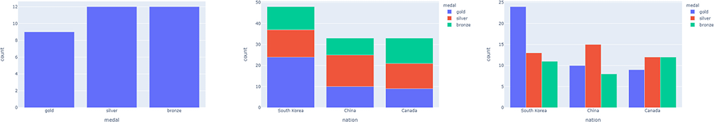
A plotly bar chart, stacked bar chart, and
side-by-side bar chart
Line Graph
Plotly Express supports line graphs with one or more lines.
>>> import plotly.express as px
>>> import pandas as pd
>>>
>>> canada = px.data.gapminder().query( 'country=="Canada"' )
>>> US = px.data.gapminder().query( 'country=="United States"' )
>>>
>>> fig = px.line( canada, x='year', y='lifeExp' )
>>> fig.show()
>>>
>>> df = pd.concat( [ canada, US ] )
>>> fig = px.line( df, x='year', y='lifeExp', color='country' )
>>> fig.show()
>>>
>>> fig.update_traces( mode='markers+lines' )
>>> fig.show()
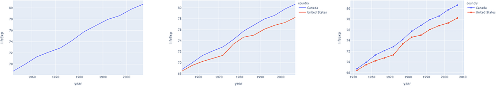
A plotly single trace line chart, double
trace line chart, and double trace line chart with markers at each
sample point bar chart
Notice the command
fig.update_traces( 'markers+lines' ) that adds
markers to the traces at each sample point, in addition to the
default connected lines. This is an example of a plotly command used
to augment a figure returned from Plotly Express. You might wonder
what a "trace" is. From the plotly documentation, "a trace is just the
name we give a collection of data and the specifications of which we
want that data to be plotted." In other words, a trace is a
visualization, or a component of a visualization. If you're curious,
the same two-trace line chart with markers would be created in plotly
as follows.
>>> import plotly.express as px
>>> import plotly.graph_objects as go
>>> import pandas as pd
>>>
>>> canada = px.data.gapminder().query( 'country=="Canada"' )
>>> US = px.data.gapminder().query( 'country=="United States"' )
>>>
>>> fig = go.Figure()
>>> fig.add_trace( go.Scatter( x=canada[ 'year' ], y=canada[ 'lifeExp' ], mode='markers+lines', name='Canada' ) )
>>> fig.add_trace( go.Scatter( x=US[ 'year' ], y=US[ 'lifeExp' ], mode='markers+lines', name='United States' ) )
>>>
>>> fig.show()
Pie Chart
Plotly Express supports standard line charts.
>>> import plotly.express as px
>>> import pandas as pd
>>>
>>> df = px.data.gapminder().query( 'year==2007' ).query( 'continent=="Americas"' )
>>> df_small = df[ df[ 'pop' ] < 5000000 ]
>>>
>>> fig = px.pie( df_small, values='pop', names='country' )
>>> fig.show()
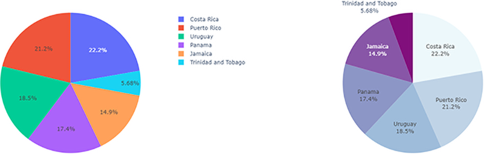
A plotly pie charts, default and augmented
with update_traces
The pie chart can be improved using fig.update_traces,
for example, to order slices largest-to-smallest clockwise from the
top of the chart, and to change the colours to ones more appropriate
for a discrete six-value sequence.
>>> import plotly.express as px
>>> import pandas as pd
>>>
>>> df = px.data.gapminder().query( 'year==2007' ).query( 'continent=="Americas"' )
>>> df_small = df[ df[ 'pop' ] < 5000000 ]
>>>
>>> fig = px.pie( df_small, values='pop', names='country' )
>>>
>>> colours=[ '#edf8fb', '#8856a7', '#8c96c6', '#bfd3e6', '#810f7c', '#9ebcda' ]
>>> fig.update_traces( direction='clockwise', sort=True, marker_colors=colours, textinfo='label+percent', showlegend=False )
>>> fig.show()
Scatterplot
Plotly Express supports scatterplots, including linear and
non-linear locally weighted scatterplot smoothing (LOWESS)
trendlines.
>>> import plotly.express as px
>>>
>>> fig = px.scatter( x=[0,1,2,3,4], y=[0,1,4,9,16] )
>>> fig.show()
>>> import plotly.express as px
>>> import pandas as pd
>>>
>>> df = px.data.iris()
>>>
>>> fig = px.scatter( df, x='sepal_width', y='sepal_length', color='species', size='petal_length', trendline='ols' )
>>> fig.show()
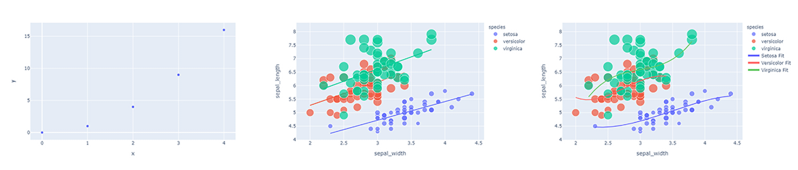
A plotly scatterplot, scatterplot with
ordinary least squares trend lines, and scatterplot with non-linear
cubic trend lines
More sophisticated non-linear trendlines (e.g., a cubic polynomial
fit) can be constructed and added using numpy and plotly.
>>> import plotly.express as px
>>> import plotly.graph_objects as go
>>> import numpy as np
>>> import pandas as pd
>>>
>>> def cubic_fit( df, type, prop_x, prop_y ):
... x = df[ df[ 'species' ] == type ][ prop_x ].to_numpy()
... y = df[ df[ 'species' ] == type ][ prop_y ].to_numpy()
... z = np.polyfit( x, y, 3 )
... f = np.poly1d( z )
...
... x_fit = np.linspace( x.min(), x.max(), 100 )
... y_fit = f( x_fit )
... return (x_fit,y_fit)
>>>
>>> df = px.data.iris()
>>> fig = px.scatter( df, x='sepal_width', y='sepal_length', color='species', size='petal_length' )
>>>
>>> x_fit_setosa,y_fit_setosa = cubic_fit( df, 'setosa', 'sepal_width', 'sepal_length' )
>>> x_fit_versicolor,y_fit_versicolor = cubic_fit( df, 'versicolor', 'sepal_width', 'sepal_length' )
>>> x_fit_virginica,y_fit_virginica = cubic_fit( df, 'virginica', 'sepal_width', 'sepal_length' )
>>>
>>> fig.add_trace( go.Scatter( x=x_fit_setosa, y=y_fit_setosa, name='Setosa Fit', marker=go.Marker( color='rgb(100,100,255)' ) ) )
>>> fig.add_trace( go.Scatter( x=x_fit_versicolor, y=y_fit_versicolor, name='Versicolor Fit', marker=go.Marker( color='rgb(255,100,100)' ) ) )
>>> fig.add_trace( go.Scatter( x=x_fit_virginica, y=y_fit_virginica, name='Virginica Fit', marker=go.Marker( color='rgb(100,200,100)' ) ) )
>>> fig.show()
Histogram
Plotly Express supports histograms for both continuous and
categorical (discrete) data.
>>> import plotly.express as px
>>> import pandas as pd
>>>
>>> df = px.data.tips()
>>> fig = px.histogram( df, x='total_bill' )
>>> fig.show()
>>>
>>> fig = px.histogram( df, x='day' )
>>> fig.show()
>>>
>>> df[ 'tip_pct' ] = df[ 'tip' ] / df[ 'total_bill' ] * 100.0
>>> fig = px.histogram( df, x='tip_pct', color='smoker', marginal='box' )
>>> fig.show()
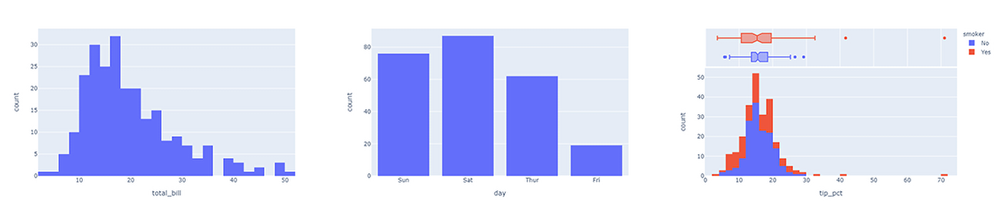
A plotly continuous data histogram, categorical data
histogram, and continuous data histogram coloured by smoker, with
a boxplot by smoker shown as a marginal visualization above the
histogram
Boxplot
Plotly Express supports boxplots, including outlier visualization
and different methods of quartile computation.
>>> import plotly.express as px
>>>
>>> df = px.data.iris()
>>> fig = px.box( df, y='sepal_width' )
>>> fig.show()
>>>
>>> fig = px.box( df, y='sepal_width', color='species' )
>>> fig.show()
>>>
>>> df = px.data.tips()
>>> fig = px.box( df, x='time', y='total_bill', color='smoker', notched=True )
>>> fig.show()
Maps
plotly supports maps using Mapbox, a map and location service for developers.
Some plotly maps may require a Mapbox account and public Mapbox
access token. Others do not. The documentation identifies when a
public token is needed.
To start, we show an example of a choropleth map visualizing
unemployment rate by continental US county. Choropleth maps require
two arguments.
- A GeoJSON-formatted geometry variable, where each geographic
feature has a specific ID field: the field identifier.
- A list of values to visualize, where each value has a specific
field identifier identical to the type used in the GeoJSON data.
The GeoJSON data is passed as a geojson argument, and
the data to visualize within the geography is passed as the
color argument of a px.choropleth_mapbox
object. The geography and value to visualize are mapped to one another
using the field identifier, which must exist in both the GeoJSON and
data structures. In our example, a county's Federal Information
Processing Standards (FIPS) code is used as the field identifier, and
exists in both the GeoJSON object and the unemployment data frame.
>>> import json
>>> import pandas as pd
>>> import plotly.express as px
>>> from urllib.request import urlopen
>>>
>>> with urlopen( 'https://raw.githubusercontent.com/plotly/datasets/master/geojson-counties-fips.json' ) as response:
... counties = json.load( response )
>>>
>>> df = pd.read_csv( 'https://raw.githubusercontent.com/plotly/datasets/master/fips-unemp-16.csv', dtype={ 'fips': str } )
>>>
>>> fig = px.choropleth_mapbox(
>>> df,
>>> geojson=counties,
>>> locations='fips',
>>> color='unemp',
>>> color_continuous_scale='Viridis',
>>> range_color=(0,12),
>>> mapbox_style='carto-positron',
>>> zoom=3,
>>> center={'lat': 37.0902, 'lon': -95.7129},
>>> opacity=0.5,
>>> labels={'unemp': 'unemployment rate' }
>>> )
>>> fig.update_layout( margin={ 'r': 0, 't': 0, 'l': 0, 'b': 0 } )
>>> fig.show()
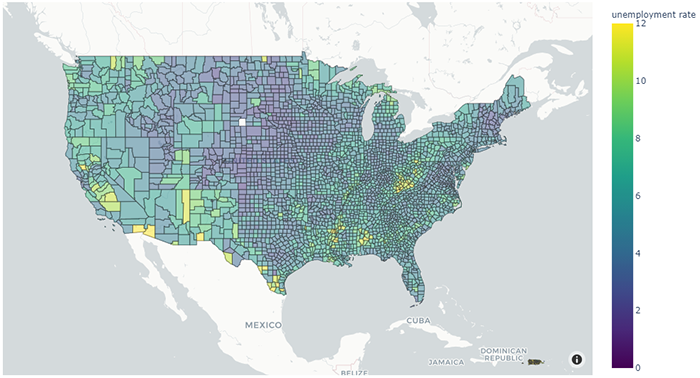
A plotly choropleth map of unemployment by US country
Mapbox maps do not support changing the map projection. To do this,
outline-based Geo maps must be used instead. A Geo
map's projection type can be changed with
fig.update_geos( projection_type='mercator' ). Numerous projects types are supported.
The example code below creates a population proportional dot map
for the United States using a Geo map created with the
go.Scattergeo plotly command.
>>> import plotly.graph_objects as go
>>> import numpy as np
>>> import pandas as pd
>>>
>>> df = pd.read_csv( 'https://raw.githubusercontent.com/plotly/datasets/master/2014_us_cities.csv' )
>>> scale = 5000
>>>
>>> fig = go.Figure()
>>>
>>> fig.add_trace( go.Scattergeo(
... lon=df[ 'lon' ],
... lat=df[ 'lat' ],
... marker = {
... 'size': df[ 'pop' ] / scale,
... 'colorscale': 'Viridis',
... 'color': np.log2( df[ 'pop' ] ),
... 'line_color': 'rgb(200,200,200)',
... 'line_width': 0.5,
... 'sizemode': 'area',
... 'colorbar': {
... 'title': 'Pop',
... 'titleside': 'top'
... }
... }
... ) )
>>>
>>> fig.update_layout(
... geo = dict(
... showland=True,
... lataxis = dict( range=[ 18, 51 ] ),
... lonaxis = dict( range=[ -124, -66 ] ),
... countrycolor = 'rgb(217,217,217)',
... countrywidth = 0.5
... )
... )
>>>
>>> fig.update_geos( projection_type='albers usa' )
>>>
>>> fig.show()
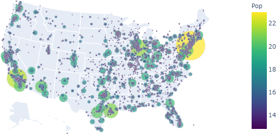
A plotly proportional dot map of city location and
population
Dash
Finally, we can start our discussion of Dash dashboards. As we
initially noted, Dash dashboards are made up of two parts:
a layout that defines how elements are position on a web page,
and interactivity that defines how users can manipulate
elements of the web page to change what it displays.
As a simple example, below is a Dash dashboard that displays
a side-by-side bar graph of the number of fruit associated with the
cities SF and Montreal. Dash dashboards
are normally run as stand-alone python code, and not within a Jupyter
notebook.
- Enter the Python code for the dashboard in an external file.
- Use
python to execute the file.
- By default, Dash places the dashboard
at http://127.0.0.1:8050/, which is shorthand for the
computer being used to access the address (i.e., your computer, or
localhost in technical terms) over port 8050. By visiting that
URL, you can view and interact with the dashboard defined in your
Python file.
>>> from dash import Dash
>>> from dash import html
>>> from dash import dcc
>>> from dash import Input
>>> from dash import Output
>>> import plotly.express as px
>>> import pandas as pd
>>>
>>> ext_SS = ['https://codepen.io/chriddyp/pen/bWLwgP.css']
>>> app = Dash(__name__, external_stylesheets=ext_SS)
>>>
>>> df = pd.DataFrame( {
>>> 'Fruit': ['Apples','Oranges','Bananas','Apples','Oranges','Bananas'],
>>> 'Amount': [4,1,2,2,4,5],
>>> 'City': ['SF','SF','SF','Montreal','Montreal','Montreal']
>>> } )
>>>
>>> fig = px.bar( df, x='Fruit', y='Amount', color='City', barmode='group' )
>>>
>>> app.layout = html.Div(
>>> children=[
>>> html.H1( children='Dash dashboard example' ),
>>> html.Div( children='Fruit Counts for SF and Montreal' ),
>>>
>>> dcc.Graph( id='ex_graph', figure=fig )
>>> ])
>>>
>>> app.run_server(debug=True)
Running this code, then visiting URL http://127.0.0.1:8050 produces the following
(non-interactive) visualization in a web browser.
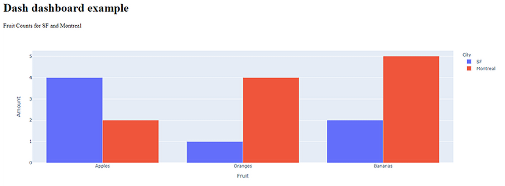
A Dash dashboard showing the number of three fruit for two different
cities, visualized as a side-by-side bar chart
To end the dashboard, terminate the Python program running
dash-app.py. A very simple explanation of the components
of this program is as follows.
app = dash.Dash(… creates the initial
Dash application using the community-recommended styles loaded from
plotly,
df = pd.DataFrame… creates a pandas
dataframe with the data we will visualize,
fig = px.bar… creates a plotly bar
graph,
app.layout = html.Div(… defines the
dashboard's layout as an initial HTML div,
children=[… places an H1
section title, a div, and a graph element within the
parent div,
html.H1 and html.Div define the title
and subtitle of the dashboard,
dcc.Graph… displays the plotly bar
graph, and assigns it an ID of ex_graph, and
app.run_server(debug=True) interprets the code to
create the dashboard at URL http://127.0.0.1:8050/
One clarifying note about setting debug=True in the
run_server function: when debug is False, changes to the
Python code will not update the dashboard. When debug is True, changes
to the Python code will automatically be detected and used to update
the dashboard in real-time. If you are using debug=True
you can run your code (based on my testing) from an Anaconda Prompt or
the Spyder IDE. We DO NOT recommend running the code in a
Jupyter notebook. Although it will run correctly the first time, there
is no easy way to terminate the dashboard if you want to re-run
it.
Setting debug=True will also add a blue button
containing < > at the bottom-right of the
screen. Clicking on this button allows you to check the status of the
Dash server, view any errors that may have occurred, and visualize the
callback graph for the dashboard.
HTML objects have default styles that can be changed in
various ways. Dash supports this ability by providing access to a
tag's style properties through update_layout() for
figures and style for Dash layouts. The following code is
a modification of the original example.
>>> from dash import Dash
>>> from dash import html
>>> from dash import dcc
>>> from dash import Input
>>> from dash import Output
>>> import plotly.express as px
>>> import pandas as pd
>>>
>>> ext_SS = ['https://codepen.io/chriddyp/pen/bWLwgP.css']
>>> app = Dash(__name__, external_stylesheets=ext_SS)
>>> colours = { 'background': '#111111', 'text': '#7fdbff' }
>>>
>>> df = pd.DataFrame( {
>>> 'Fruit': ['Apples','Oranges','Bananas','Apples','Oranges','Bananas'],
>>> 'Amount': [4,1,2,2,4,5],
>>> 'City': ['SF','SF','SF','Montreal','Montreal','Montreal']
>>> } )
>>>
>>> fig = px.bar( df, x='Fruit', y='Amount', color='City', barmode='group' )
>>> fig.update_layout(
>>> plot_bgcolor=colours[ 'background' ],
>>> paper_bgcolor=colours[ 'background' ],
>>> font_color=colours[ 'text' ]
>>> )
>>>
>>> app.layout = html.Div(
>>> style={ 'backgroundColor': colours[ 'background' ] },
>>> children=[
>>> html.H1(
>>> children='Dash dashboard example',
>>> style={ 'textAlign': 'center', 'color': colours[ 'text' ] }
>>> ),
>>> html.Div(
>>> children='Fruit Counts for SF and Montreal',
>>> style={ 'textAlign': 'center', 'color': colours[ 'text' ] }
>>> ),
>>>
>>> dcc.Graph( id='ex_graph', figure=fig )
>>> ]
>>> )
>>>
>>> app.run_server(debug=True)
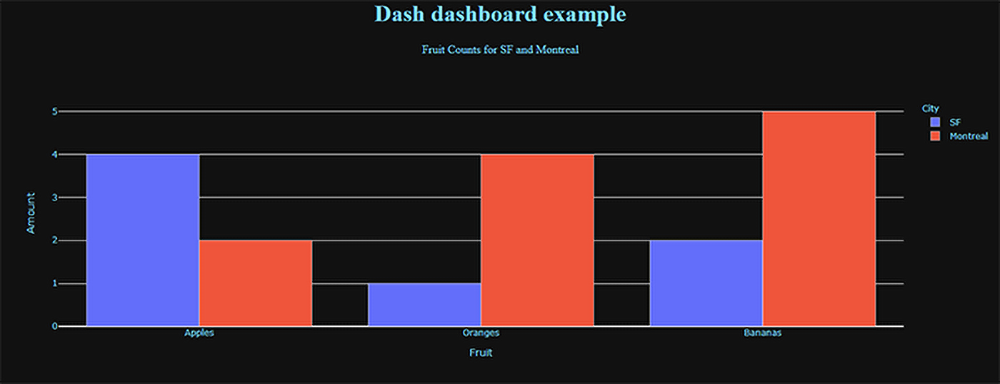
A Dash dashboard showing the number of three fruit for two different
cities, visualized as a side-by-side bar chart, with HTML styles
applied to control dashboard colours
Interactive Widgets
As with most applications, Dash provides a set of standard widgets
to allow users to interact with an application. The code below shows a
sample of Dash's interactive objects, including dropdown and
multi-dropdown menus, radiobuttons, checkboxes, input fields, and
sliders.
>>> from dash import Dash
>>> from dash import html
>>> from dash import dcc
>>> from dash import Input
>>> from dash import Output
>>> import plotly.express as px
>>> import pandas as pd
>>>
>>> ext_SS = ['https://codepen.io/chriddyp/pen/bWLwgP.css']
>>> app = Dash(__name__, external_stylesheets=ext_SS)
>>>
>>> app.layout = html.Div([
... html.Label('Dropdown'),
... dcc.Dropdown(
... options=[
... {'label': 'New York City', 'value': 'NYC'},
... {'label': 'Montreal', 'value': 'MTL'},
... {'label': 'San Francisco', 'value': 'SF'}
... ],
... value='MTL'
... ),
... html.Div(style={'padding': '20px'}),
...
... html.Label('Multi-Select Dropdown'),
... dcc.Dropdown(
... options=[
... {'label': 'New York City', 'value': 'NYC'},
... {'label': 'Montreal', 'value': 'MTL'},
... {'label': 'San Francisco', 'value': 'SF'}
... ],
... value=['MTL', 'SF'],
... multi=True
... ),
... html.Div(style={'padding': '20px'}),
...
... html.Label('Radio Items'),
... dcc.RadioItems(
... options=[
... {'label': 'New York City', 'value': 'NYC'},
... {'label': 'Montreal', 'value': 'MTL'},
... {'label': 'San Francisco', 'value': 'SF'}
... ],
... value='MTL'
... ),
... html.Div(style={'padding': '20px'}),
...
... html.Label('Checkboxes'),
... dcc.Checklist(
... options=[
... {'label': 'New York City', 'value': 'NYC'},
... {'label': 'Montreal', 'value': 'MTL'},
... {'label': 'San Francisco', 'value': 'SF'}
... ],
... value=['MTL', 'SF']
... ),
... html.Div(style={'padding': '20px'}),
...
... html.Label('Text Input: '),
... dcc.Input(value='MTL', type='text'),
... html.Div(style={'padding': '20px'}),
...
... html.Label('Slider'),
... dcc.Slider(
... min=1,
... max=9,
... marks={i: 'Label {}'.format(i) if i == 1 else str(i) for i in range(1, 10)},
... value=5,
... )
>>> ])
>>>
>>> app.run_server(debug=True)
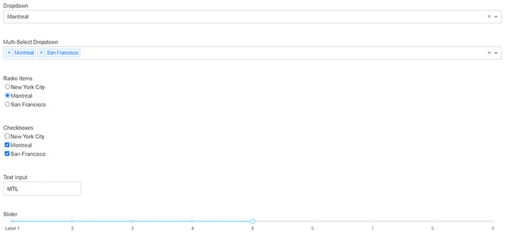
Examples of Dash dropdown, multi-dropdown, radiobutton group,
checkbox group, text input, and slider widgets
Callbacks
Once interactive widgets are placed on a dashboard, we need a way
to recognize when they are changed. This is done
using callbacks, a standard method to monitor user interaction
in an application. Whenever a widget is manipulated to change its
value, a callback is made to the Python program controlling the
dashboard. Code in the program captures the callback, so it can
examine the new widget value and update the dashboard's content
appropriately.
As a very simple example of callbacks, the following Python program
creates a Dash dashboard with an input text field, and an output label
that displays the current value of the text field.
>>> from dash import Dash
>>> from dash import html
>>> from dash import dcc
>>> from dash import Input
>>> from dash import Output
>>> import plotly.express as px
>>> import pandas as pd
>>>
>>> ext_SS = ['https://codepen.io/chriddyp/pen/bWLwgP.css']
>>> app = Dash(__name__, external_stylesheets=ext_SS)
>>>
>>> app.layout = html.Div( [
>>> html.H6( 'Change the value in the text box to invoke the callback' ),
>>> html.Div( [
>>> 'Input: ',
>>> dcc.Input( id='inp', value='Initial Value', type='text' )
>>> ] ),
>>> html.Br(),
>>> html.Div( id='out' )
>>> ] )
>>>
>>> @app.callback(
>>> [ Output(component_id='out', component_property='children') ],
>>> [ Input(component_id='inp', component_property='value') ],
>>> )
>>> def update_output_div( input_value ):
... s = 'Output: {}'.format( input_value )
... return [ s ]
>>>
>>> app.run_server(debug=True)
 A Dash input textbox and a callback that displays the current value
of the textbox in a
A Dash input textbox and a callback that displays the current value
of the textbox in a div
We have already discussed the code used to create the dashboard and its
corresponding widgets. The @app.callback function is where
a callback to detect changes to the input textbox and modify the output
div is contained.
@app.callback defines the inputs
and outputs of the dashboard.
@app.callback is described as
a decorator in Dash. It tells Dash to call this function
whenever the value of an input changes, presumably in order to update
the children of an output.
Input defines the input component and the input's
property that contains a new input value. In our example, the input
component is the dcc.Input textbox with the
ID inp. The new input value is the value
property of the textbox.
Output defines the output recipient and the
recipient's property. In our example, the recipient is the component
in our layout with the ID out (a div). The
recipient's children value will be updated with the new
input value.
- Immediately following
@app.callback is a function
that takes the new input value as an argument, and returns a new
output value to store in the recipient's property. Note that the
function must be defined immediately after
the @app.callback function, with no blank lines or other
intervening code.
- The callback function can be named as desired, although it should
usually reflect the purpose of the callback. In our
code,
update_output_div takes input_value,
which is the new value of the textbox, and returns a string containing
this new value.
Here is another, more realistic, example that uses a slider and a
scatterplot to visualize the relationship between GDP per capita and
life expectancy, subdivided by continent.
>>> from dash import Dash
>>> from dash import html
>>> from dash import dcc
>>> from dash import Input
>>> from dash import Output
>>> import plotly.express as px
>>> import pandas as pd
>>>
>>> df = pd.read_csv( 'https://raw.githubusercontent.com/plotly/datasets/master/gapminderDataFiveYear.csv' )
>>>
>>> ext_SS = ['https://codepen.io/chriddyp/pen/bWLwgP.css']
>>> app = Dash(__name__, external_stylesheets=ext_SS)
>>>
>>> app.layout = html.Div( [
>>> dcc.Graph( id='graph-with-slider' ),
>>> dcc.Slider(
>>> id='year-slider',
>>> min=df['year'].min(),
>>> max=df['year'].max(),
>>> value=df['year'].min(),
>>> marks={str(year): str(year) for year in df['year'].unique()},
>>> step=None
>>> )
>>> ] )
>>>
>>> @app.callback(
>>> [ Output('graph-with-slider', 'figure') ],
>>> [ Input('year-slider', 'value') ],
>>> )
>>> def update_figure( year ):
... filtered_df = df[ df.year==year ]
...
... fig = px.scatter(
... filtered_df,
... x='gdpPercap',
... y='lifeExp',
... size='pop',
... color='continent',
... hover_name='country',
... log_x=True,
... size_max=55
... )
...
... fig.update_layout( transition_duration=500 )
... return [ fig ]
>>>
>>> app.run_server(debug=True)
 A Dash scatterplot showing GDP per capita versus life expectancy,
categorized by continent. The slider allows users to change the year
being visualized from 1952 to 2007
A Dash scatterplot showing GDP per capita versus life expectancy,
categorized by continent. The slider allows users to change the year
being visualized from 1952 to 2007
Of course, most dashboards will have multiple inputs and
outputs. How is this handled in Dash? For inputs, notice that
Input is embedded within a list. You can define multiple
Input statements in this list. For each
Input statement you add, another input argument is
included in your callback function.
>>> from dash import Dash
>>> from dash import html
>>> from dash import dcc
>>> from dash import Input
>>> from dash import Output
>>> import plotly.express as px
>>> import pandas as pd
>>>
>>> ext_SS = ['https://codepen.io/chriddyp/pen/bWLwgP.css']
>>> app = Dash(__name__, external_stylesheets=ext_SS)
>>>
>>> df = pd.read_csv( 'https://plotly.github.io/datasets/country_indicators.csv' )
>>>
>>> indicators = df[ 'Indicator Name' ].unique()
>>>
>>> app.layout = html.Div( [
>>> html.Div( [
>>> html.Div( [
>>> dcc.Dropdown(
>>> id='xaxis-column',
>>> options=[{'label': i, 'value': i} for i in indicators],
>>> value='Fertility rate, total (births per woman)'
>>> ),
>>> dcc.RadioItems(
>>> id='xaxis-type',
>>> options=[{'label': i, 'value': i} for i in ['Linear','Log']],
>>> value='Linear',
>>> labelStyle={'display': 'inline-block'}
>>> )
>>> ],
>>> style={'width': '48%', 'display': 'inline-block'}),
>>>
>>> html.Div( [
>>> dcc.Dropdown(
>>> id='yaxis-column',
>>> options=[{'label': i, 'value': i} for i in indicators],
>>> value='Life expectancy at birth, total (years)'
>>> ),
>>> dcc.RadioItems(
>>> id='yaxis-type',
>>> options=[{'label': i, 'value': i} for i in ['Linear','Log']],
>>> value='Linear',
>>> labelStyle={'display': 'inline-block'}
>>> )
>>> ],
>>> style={'width': '48%', 'float': 'right', 'display': 'inline-block'}),
>>> ] ),
>>>
>>> dcc.Graph( id='indicator-graph' ),
>>>
>>> dcc.Slider(
>>> id='year-slider',
>>> min=df['Year'].min(),
>>> max=df['Year'].max(),
>>> value=df['Year'].max(),
>>> marks={str(year): str(year) for year in df['Year'].unique()},
>>> step=None
>>> )
>>> ] )
>>>
>>> @app.callback(
>>> [ Output('indicator-graph', 'figure') ],
>>> [ Input('xaxis-column', 'value'),
>>> Input('yaxis-column', 'value'),
>>> Input('xaxis-type', 'value'),
>>> Input('yaxis-type', 'value'),
>>> Input('year-slider', 'value') ]
>>> )
>>> def update_graph( xaxis_col_nm, yaxis_col_nm, xaxis_type, yaxis_type, year ):
... dff = df[ df['Year']==year ]
...
... fig = px.scatter(
... x=dff[dff['Indicator Name']==xaxis_col_nm]['Value'],
... y=dff[dff['Indicator Name']==yaxis_col_nm]['Value'],
... hover_name=dff[dff['Indicator Name']==yaxis_col_nm]['Country Name'],
... )
...
... fig.update_layout(margin={'l': 40, 'b': 40, 't': 10, 'r': 0}, hovermode='closest')
... fig.update_xaxes(title=xaxis_col_nm, type='linear' if xaxis_type=='Linear' else 'log')
... fig.update_yaxes(title=yaxis_col_nm, type='linear' if yaxis_type=='Linear' else 'log')
... return [ fig ]
>>>
>>> app.run_server(debug=True)
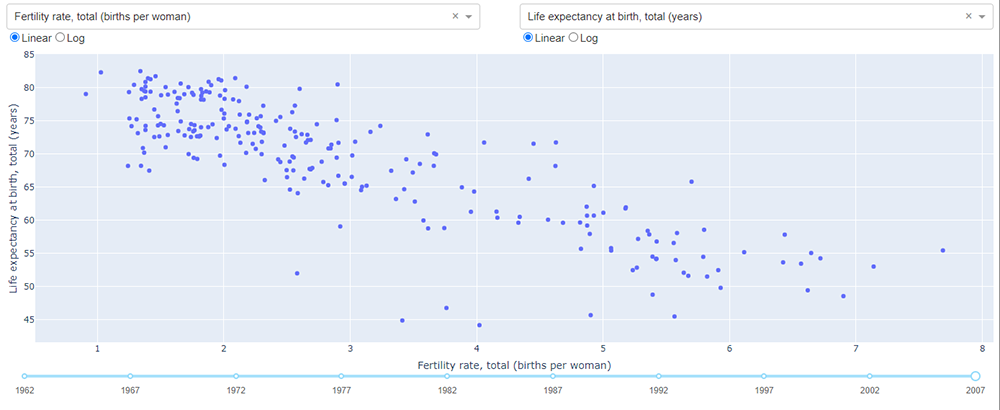
A Dash scatterplot with variable x and y-axes, as well
as the ability to display linear or logarithmic axis spacing, and to
choose the year of data to plot
In this example, there are five input widgets: two dropdown menus,
two radiobutton groups, and a slider. All five are included in the
Input list: xaxis-column,
yaxis-column, xaxis-type,
yaxis-type, and year-slider,
respectively. In the update_graph function the values for
those five widgets are passed as xaxis_col_nm,
yaxis_col_nm, xaxis_type,
yaxis_type, and year. Other than this, the
function operates identically, returning an updated scatterplot based
on the five selected inputs.
Multiple outputs work in a similar way. First, you specify each
output as part of the list of Output statements. Then,
specify each output element in order in the list returned by the
callback function.
>>> from dash import Dash
>>> from dash import html
>>> from dash import dcc
>>> from dash import Input
>>> from dash import Output
>>> import plotly.express as px
>>> import pandas as pd
>>>
>>> ext_SS = ['https://codepen.io/chriddyp/pen/bWLwgP.css']
>>> app = Dash(__name__, external_stylesheets=ext_SS)
>>>
>>> df = px.data.gapminder().query( 'year==2007' )
>>> continents = df[ 'continent' ].unique()
>>>
>>> app.layout = html.Div(
>>> children=[
>>> dcc.Dropdown(
>>> id='continent',
>>> options=[ { 'label': c, 'value': c } for c in continents ],
>>> value=continents[ 0 ]
>>> ),
>>>
>>> dcc.Graph( id='bar' ),
>>> dcc.Graph( id='map' )
>>> ] )
>>>
>>> @app.callback(
>>> [ Output('bar', 'figure'),
>>> Output('map', 'figure') ],
>>> [ Input('continent', 'value') ]
>>> )
>>> def update_bar_map( continent ):
... dff = df[ df['continent']==continent ]
...
... bar = px.bar( dff, x='country', y='gdpPercap' )
... map = px.treemap(
... dff,
... path=['country'],
... values='pop',
... color='gdpPercap',
... color_continuous_scale='RdBu'
... )
...
... return [ bar, map ]
>>>
>>> app.run_server(debug=True)
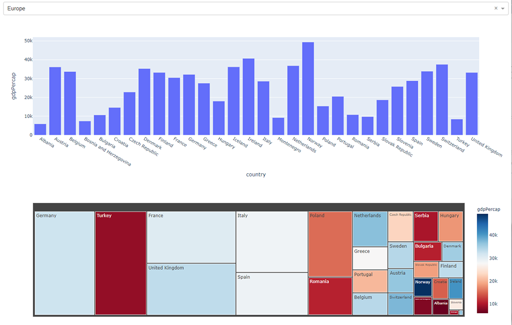
A Dash bar chart and treemap. The bar chart shows per capita GDP by country
for the user-chosen continent. The treemap show population by size and
per capita GDP by colour, by country for the user-chosen continent
This dashboard shows the GDP per capita for countries in a
user-chosen continent. Continent selection is performed with a
standard dropdown menu. GDP per capita is shown in two
visualizations. The first uses a simple bar chart by country. The
second uses a treemap, where the size of the rectangle assigned to a
country represents its population, and the rectangle's colour
represents the GDP per capita from a red–blue double-ended
colour scale.
Publishing
Unfortunately, publishing a Dash dashboard is not as straight
forward as it is with other environments like R+Shiny. plotly does not
maintain a public cloud to upload dashboards. Various options are
suggested by different Dash users.
Dash itself suggests
the following documentation for deploying Dash
applications. Your milage may vary on this, but it is probably the
best starting point for attempt to build a Dash appliation that is
accessible from the web.